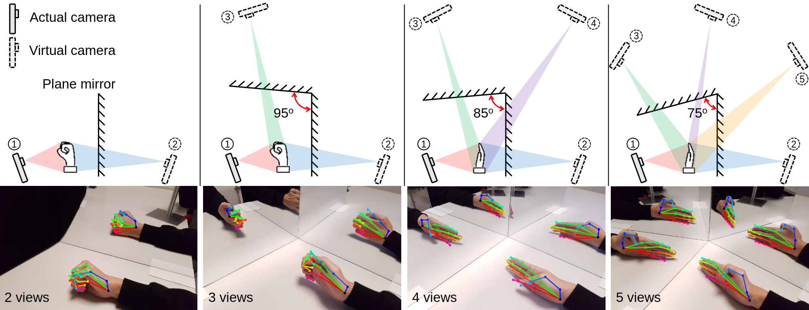

Current clinical practice of measuring hand joint range of motion relies on a goniometer as it is inexpensive, portable, and easy to use, but it can only measure the static angle of a single joint at a time. To measure dynamic hand motion, a camera-based system that can perform markerless hand pose estimation is attractive, as the system is ubiquitous, low-cost, and non-contact. However, camera-based systems require line-of-sight, and tracking accuracy degrades when the joint is occluded from the camera view. Thus, we propose a multi-view setup using a readily available color camera from a single mobile phone, and plane mirrors to create multiple views of the hand. This setup eliminates the complexity of synchronizing multiple cameras and reduce the issue of occlusion. Experimental results show that the multi-view setup could help to reduce the error in measuring the flexion angle of finger joints. Dynamic hand pose estimation with object interaction is also demonstrated.
Overview of the multi-view setup with a mobile phone and two plane mirrors mounted rigidly on a stable tabletop. Mirrors are used to create multiple views of the same hand to reduce the issue of occlusion. We first identify 2D hand keypoints in the images using Gouidis et al. work on Accurate Hand Keypoint Localization on Mobile Devices). Next, we optimized 3D pose of a skeletal hand model to match all the keypoints in each view.
By adjusting the angle between the mirrors, it would result in double reflections creating more virtual cameras and different number of views.
@inproceedings{hoseg:2019,
title = {Hand and Object Segmentation from Depth Image using Fully Convolutional Network},
author = {Guan Ming, Lim and Prayook, Jatesiktat and Christopher Wee Keong, Kuah and Wei Tech, Ang},
booktitle = {41st Annual International Conference of the IEEE Engineering in Medicine and Biology Society (EMBC)},
year = {2019}
}